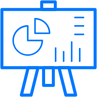

DESIGN
User flow, Information Architecture, Wireframing, Prototyping, Illustration
DEVELOPMENT
HTML, CSS, JavaScript, Python
RESEARCH
User Interviews, Persona, Competitive Analysis, Usability Testing, A/B Testing
GRAPHIC & WEB DESIGNER
Super Ming Trading Inc
Feb 2024 - December 2024
- Created engaging and creative graphics, banners, and packaging designs to visually represent the company's brand.
- Edited photos from photoshoots to align with brand standards.
- Developed website graphics and wireframes, and designed email and landing page templates. Designed and developed websites using WordPress, Shopify.
- Collaborated with clients and team members to bring design ideas to life.
- Managed the design and production of marketing materials, promotional displays and brochures.
UI/UX DESIGNER, PRODUCT MANAGER
China AI Media & Entertainment Technology Co.,Ltd
Mar 2022 - Aug 2023
- Developed company-wide interaction and UI design specifications, implementing a unified design language to establish a robust product design system, resulting in improved user experience and heightened product satisfaction.
- Conducted comprehensive user research and product planning, focusing on optimizing user experience across both mobile and web platforms, ensuring performance in dual-end cross-screen scenarios.
- Oversaw the management of the coordinating internal design requirements with technical departments, effectively handling task allocation, scheduling, and deliverables.
UI/UX DESIGN MANAGER
Great Wall Motor Co., Ltd.
Dec 2018 - Feb 2022
- Spearheaded the development of new auto finance retail products, overseeing various lines including C-side APP,B-side APP, website, mini program, background, and other related product lines.
- Demonstrated expertise in designing intricate pages such as car e-commerce home page, selection, details,and activity pages, collaborating closely with operations to boost retention and arrival rates.
- Implemented continuous product version planning and iterative updates, leveraging data analysis, user needs assessment, scene mining, and alignment with company market strategy.
- Orchestrated planning and execution of system functions from inception to expansion, overseeing project establishment, analysis, planning, design,development, testing, data analysis, and team management.
SENIOR UI DESIGNER
YSTen Technology Co., Ltd
Aug 2015 - Oct 2018
- Led UI and UE design initiatives, establishing specifications for both mobile and TV products.
- Contributed to product requirement development and iterative APP revisions.
- Directed the visual design aspects of the APP, actively participating in the creation of interactive prototypes.
- Established a mobile design team from inception to execution(O-1), defining recruitment and assessment standards for designers.
- Oversaw recruitment and management of design staff,as well as the management of third-party design suppliers.